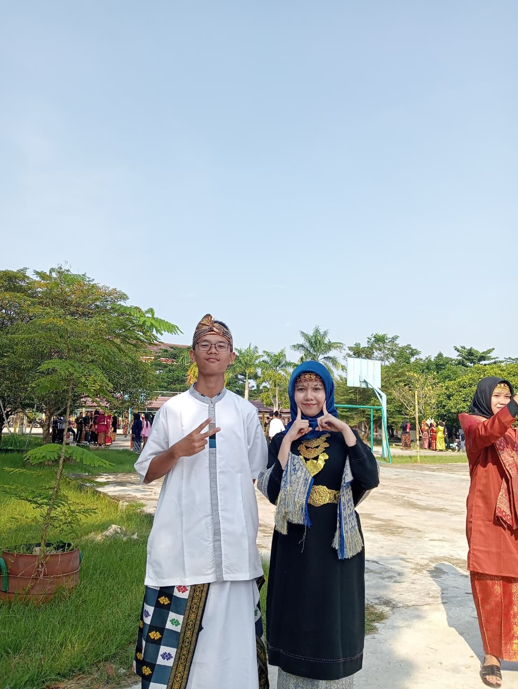
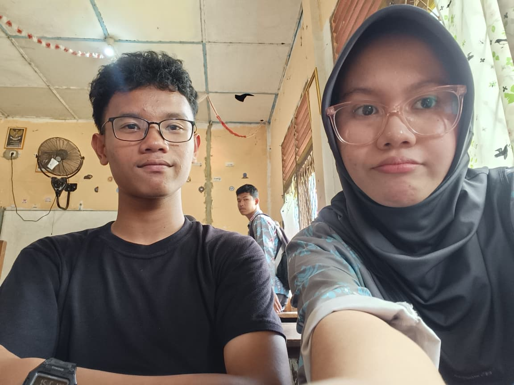
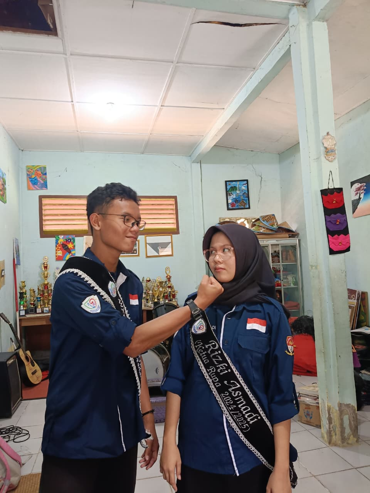
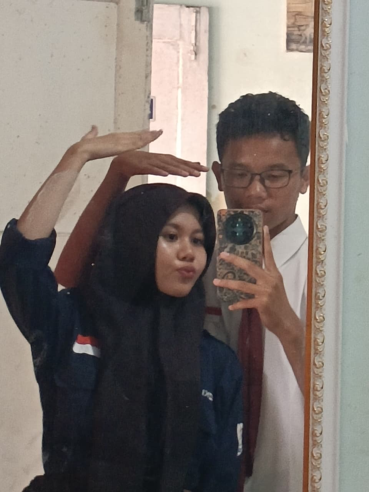

Some memories deserve more than a place in our minds.

Our first photo.
Before We Were "Us" We weren't close yet. We only knew each other's names. That day, we were both wearing our parents' clothes for an event, and I don't think either of us realized that we'd be standing here someday. Looking back at this photo now... maybe our story had already started long before we noticed it.

Happiest Days
Just UNO, But So Much More It was only a free period at school. We played UNO, sat next to each other, laughed over the smallest things, and took this selfie together. Nothing extraordinary happened that day. Yet somehow... it became one of my favorite memories with you. Funny how the simplest moments can become the happiest ones.

Proud.
Standing Beside You This was the day you officially handed over your position. We both wore our uniforms and our sashes, and I couldn't stop thinking about how proud I was to see you there. You looked so confident. So cool. And honestly... I couldn't take my eyes off you.

Our Funniest Photo
Who's Taller? I still laugh every time I look at this picture. We were secretly comparing our heights without saying much, and somehow this silly moment became one of the cutest photos we have. It's not perfect. It's not planned. But that's exactly why I love it.
My Favorite Person
You. Out of all the photos in this little website... this one is my favorite. Not because it's the best picture. But because it has the person who slowly became my safest place, my biggest comfort, and one of the best things that ever happened to me. Thank you for existing. And thank you... for choosing to stay.
Some memories stay in photos.
But some...
stay in the heart.